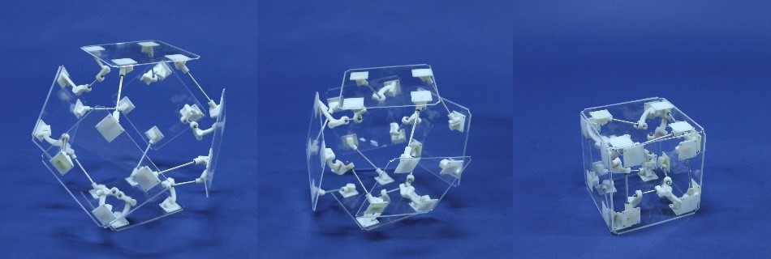
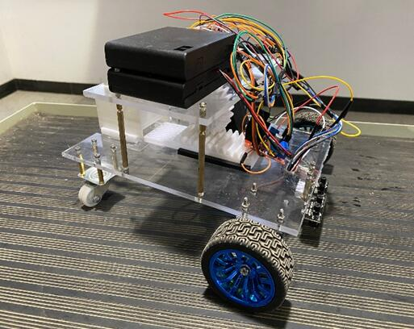

刘宇轩
智能机器平台-计算机科学与技术
天津大学 未来技术学院
主页
项目
CV
学业
个人
SocialHosted on GitHub Pages — Theme by orderedlist
手臂肌电信号的临床应用装置
利用EMG肌肉电传感器采集的人体手臂表面肌电信号，将采集到的信号谱滤波后得到脉冲信号，使用RNN分析受试者手势（自然、握拳、张开手掌）并制作实物手环。通过佩戴内置肌电传感器的陪护手环，正在输液等不便于呼叫陪护的患者可以通过做特定手势呼叫护士，护士站电脑终端可以获取需要帮助的患者的号码。

An-application-of-electromyographic-signals GitHub link
可展多面体机构
可展多面体机构在实现其承载功能的前提下，能够大尺寸地改变几何形状与空间构型，以适应不同的应用需求，是空间可折展结构和大型可折展设备的关键技术。单自由度可展多面体机构可以实现单一驱动下两个空间构型的切换，如图一中截角八面体和立方体之间的变换，在展开时可大幅增加工作空间与面积，在完全折叠状态下可减少储存和运输空间。对多面体展开与折叠构型进行分析，确定各顶点的运动副类型及方位，用以形成具有协调运动的多面体空间机构网格。
Expandable-Structure GitHub link

循迹投放物流车
Oblivious RAM hides the memory access pattern by using extra bandwidth and memory overhead. Path ORAM stores memory blocks on a binary tree's random branch. Because the blocks are positioned on distinct branches, repeated procedures reveal no information. rORAM is an optimization of Path ORAM to achieve faster interval queries by saving multiple binary trees. Another spatial optimization of Path ORAM is to use B-tree instead of linear position map storage. After studying, I found that by combining the two optimizations, I can take full advantage of both and make progress in both time and space.
Logistics-Tracking-Car GitHub link

针对火星沙尘的自动除尘设计
Oblivious RAM hides the memory access pattern by using extra bandwidth and memory overhead. Path ORAM stores memory blocks on a binary tree's random branch. Because the blocks are positioned on distinct branches, repeated procedures reveal no information. rORAM is an optimization of Path ORAM to achieve faster interval queries by saving multiple binary trees. Another spatial optimization of Path ORAM is to use B-tree instead of linear position map storage. After studying, I found that by combining the two optimizations, I can take full advantage of both and make progress in both time and space.
A-device-for-dust-removal-from-Mars-solar-panels GitHub link